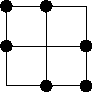
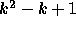

| No Rectangles |
Consider a grid such as the one shown. We wish to mark k intersections in each of n rows and n columns in such a way that no 4 of the selected intersections form a rectangle with sides parallel to the grid. Thus for k = 2 and n = 3, a possible solution is:

It can easily be shown that for any given value of k,  is a lower bound on the value of n, and it can be shown further that n need never be larger than this.
Write a program that will find a solution to this problem for k<=32,>k-1 will be 0, 1 or prime.
Input will consist of some values for k, one of each line. For each value of k, output will consist of n lines of k points indicating the selected points on that line. Print a blank line between two values of k.
2 1
1 2 1 3 2 3 1